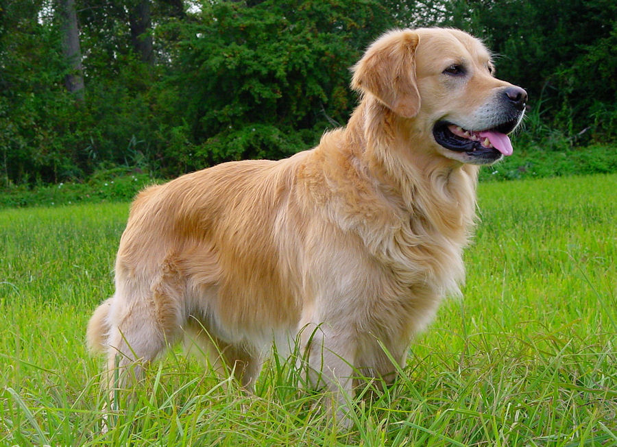

Quer aprender como dar banho em Golden tranquilamente?

O nome da raça reflete a cor da pelagem, mas também revela a
personalidade marcante do cão.
Dar banho em um Golden Retriever pode ser uma tarefa desafiadora para muitos tutores, especialmente devido ao tamanho e à energia dessa raça. No entanto, com algumas dicas simples e práticas, é possível transformar o momento do banho em uma experiência mais tranquila e até divertida para você e seu pet. Confira abaixo as melhores dicas para dar banho no seu Golden Retriever de forma eficiente e sem estresse.
1. Prepare o Ambiente com Antecedência Antes de começar o banho, é fundamental garantir que o ambiente esteja preparado. Se possível, escolha um local espaçoso e confortável, onde seu Golden se sinta à vontade. Pode ser a banheira, o chuveiro ou até o jardim, caso o tempo esteja bom. Certifique-se de que todos os produtos que você vai usar estão ao alcance das mãos, como xampu específico para cães, toalhas, escovas e, se necessário, um secador.
2. Escove o Pelo Antes do Banho Golden Retrievers têm um pelo denso e longo, o que significa que eles acumulam muitos nós e emaranhados. Escovar o pelo antes de molhá-lo ajuda a remover os nós e também facilita a aplicação do xampu, além de reduzir a quantidade de pelo solto durante o banho. Utilize uma escova própria para cães de pelo longo, que ajuda a desembaraçar sem danificar o pelo.
3. Água Morna é a Melhor Opção Os Golden Retrievers geralmente não gostam de água muito quente ou fria. A melhor opção é usar água morna, que é confortável para o seu cão e garante que o banho seja relaxante. Teste a temperatura antes de molhar o cão, para evitar qualquer desconforto.
4. Use Produtos Adequados Evite usar xampus de uso humano, pois podem irritar a pele sensível dos cães. Escolha um xampu específico para cães, preferencialmente um suave e que ajude a manter o pH da pele do seu Golden. Além disso, se o seu pet tem pele sensível ou é propenso a alergias, opte por produtos hipoalergênicos.
5. Molhe Gradualmente Ao começar a molhar o seu Golden, faça isso de forma gradual e com calma. Comece com as patas e vá subindo até o corpo, para que o cão se acostume com a sensação da água. Muitos cães se assustam no início, então, ao ser paciente e ir molhando aos poucos, você diminui a chance de estresse.
6. Massageie o Shampoo de Forma Delicada Ao aplicar o shampoo, faça uma massagem suave e delicada, focando nas áreas que geralmente acumulam sujeira, como as patas e a barriga. Evite o contato com os olhos e ouvidos do cão, já que essa região é mais sensível. Se o seu Golden for muito agitado durante o banho, tenha paciência e tente mantê-lo calmo com palavras suaves e carinhosas.
7. Enxágue Bem Certifique-se de enxaguar bem o xampu do pelo do seu Golden, já que o resíduo pode causar irritação na pele. Enxágue até que a água saia limpa. Não deixe nenhum produto restante, especialmente se o seu cão tem pele sensível.
8. Secagem Suave Após o banho, use toalhas grandes e fofas para secar seu Golden. Dê leves batidinhas para remover o excesso de água, sem esfregar agressivamente, o que pode embaraçar o pelo. Se o seu cão se sente confortável com o som, você pode usar um secador de cabelo com temperatura baixa para secar mais rapidamente, sempre com cuidado para não queimar a pele.
9. Evite Banhos Frequentes Golden Retrievers têm uma pele naturalmente oleosa, o que significa que banhos frequentes podem remover a camada protetora de óleo e causar ressecamento ou irritação. Evite dar banho no seu Golden mais do que uma vez a cada 4 a 6 semanas, a menos que seja necessário por questões de saúde ou higiene.
10. Recompense Seu Cão Por fim, ao terminar o banho, recompense seu Golden com petiscos e muito carinho! Isso ajudará a criar uma associação positiva com o momento do banho, tornando a experiência mais tranquila e até prazerosa para o futuro.
Conclusão
Dar banho em um Golden Retriever não precisa ser uma tarefa difícil. Com paciência, preparação e as dicas certas, o processo pode se tornar muito mais fácil para ambos. Lembre-se de manter a calma, ser gentil e sempre proporcionar um ambiente seguro e confortável para o seu cão. E, claro, não se esqueça de recompensá-lo com carinho, para que ele associe o banho a algo positivo!